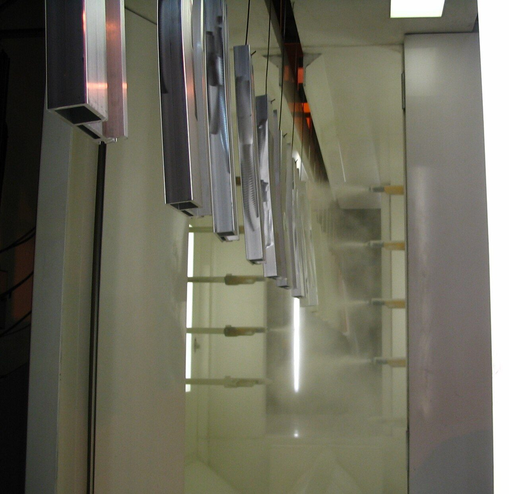

Aluminium profile extrusion
Your cross-section, with a dedicated die
Aluminium profiles in the cross-section you need. HyperFab’s engineering team advises on the section geometry, then a dedicated extrusion die is built and the profile is produced. You need the required tonnage and pay for the die; HyperFab’s engineering team handles the rest.
- Speciality: aluminium extrusion only
- Your part: required tonnage + die cost
- Our part: section consultation, die, production, QC and delivery


Aluminium extrusion at HyperFab
Aluminium extrusion pushes a hot aluminium billet under pressure through a steel die to make a long profile with a constant cross-section. Almost any section you can draw can be made with a dedicated die: solid, hollow, slotted, finned or with screw ports. That makes extrusion the most economical way to make long, uniform aluminium parts.
HyperFab specialises in aluminium extrusion. The model is simple: you have the required tonnage and pay for the die. Section design consultation, die making, profile production, quality control and delivery are handled by HyperFab’s engineering team. The result is a profile with exactly the section you need, not the closest one available on the market.
Consultation before the die matters. Extrusion dies are expensive, and a poorly designed section can lead to warped profiles, uneven surfaces or a broken die. Before the die is made, HyperFab’s engineering team reviews your section for wall thickness, symmetry, corner radii and tongue ratios and suggests changes, so the die is built once, and built right.
Your part and our part
| Step | Who |
|---|---|
| Defining the use and initial section | You |
| Consultation and final section geometry | HyperFab’s engineering team, with your approval |
| Paying for the die | You |
| Extrusion die design and manufacture | HyperFab |
| Profile production at the ordered tonnage | HyperFab |
| Quality control and delivery | HyperFab |
Profiles we extrude
Industrial and T-slot profiles
Structural and slotted profiles for machine frames, workbenches and production lines.
Heat sinks and finned profiles
Finned profiles for heat dissipation in power electronics, drives and LEDs.
Housings and enclosures
Device housings and electronic enclosures with a section dedicated to your product.
Architectural and decorative profiles
Frames, edges, handles and decorative profiles.
Hollow and multi-cavity profiles
Hollow and multi-cavity sections that are both light and strong.
Rails and guides
Rails, linear guides and light parts for equipment and transport.
Designing an extrusion section
Following these points extends die life and lowers the cost per kilo; all of them are reviewed in consultation.
Uniform wall thickness: large thickness differences unbalance metal flow and warp the profile.
Rounded corners: give sharp corners a small radius for longer die life and a better surface.
Balanced section: symmetric, balanced sections extrude more stably and accurately.
Die tongues: deep, narrow slots weaken the die tongue; the depth-to-width ratio must be controlled.
Section size: the section must fit the production range; the right size is set in consultation.
Tolerances: keep tight tolerances for functional dimensions only.
After extrusion
An extruded profile is usually not yet the finished product. At HyperFab you can add anodizing, powder coating, machining, punching and aluminium welding, and receive a part that is ready to assemble.


How an extrusion order runs
Send the section or idea
Send the section drawing, a DXF or even a sketch and the profile’s use, or describe it by phone.
Section consultation
The engineering team reviews and optimises the section for extrusion and advises the right tonnage.
Quotation
Die cost and profile price, by alloy, weight and tonnage, are quoted separately.
Die and sample
The die is built and a sample profile is produced for your approval.
Production and delivery
The profile is produced at the ordered tonnage, inspected and delivered.
Frequently asked questions
Does HyperFab extrude aluminium profiles?
What do I need to order a custom aluminium profile?
What is the minimum order for aluminium extrusion?
Do you design the profile section?
Do you extrude materials other than aluminium?
Can you anodize or coat the profiles?
Tell us about your profile section
Send the section drawing or sketch, or call. HyperFab’s engineering team advises on the section, tonnage and die.